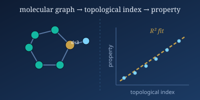
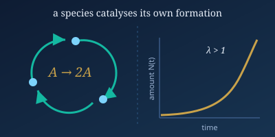
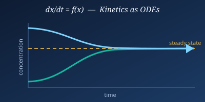
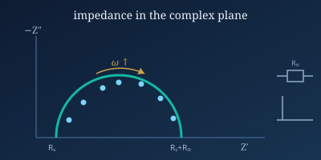
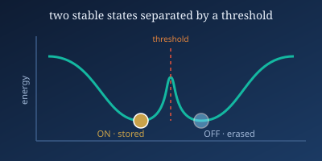
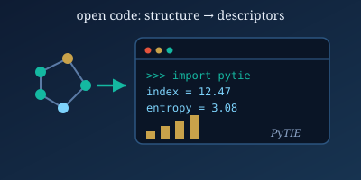

NIMS Postdoctoral Researcher
National Institute for Materials Science (NIMS), Japan
I am an interdisciplinary researcher with a strong background in applied mathematics, chemical kinetics, and chemical reaction networks. Currently, I am a postdoctoral researcher at the National Institute for Materials Science (NIMS), Japan, where I develop accurate mathematical models and analytical formulations to predict the properties and dynamics of complex, nonlinear chemical systems.
My doctoral research was in chemical graph theory, focusing on predicting the physicochemical properties of metamaterials and drug-related structures. The central contribution of that work was using regression analysis to evaluate a wide range of topological indices and identify those with the strongest predictive power for the physicochemical properties of several important classes of molecular structures.
Across both my doctoral and postdoctoral work, a single thread runs through everything: the analysis of chemical reaction networks. I am passionate about leveraging mathematical tools to gain deeper insight into chemical processes and to contribute to advances in materials science and related disciplines.
The greatest discoveries are made at the boundaries between disciplines, where different ways of thinking come together to reveal new understanding.
My current postdoctoral research concerns predicting the kinetic properties of chemical reaction networks in champion materials, using mathematical modelling based on ordinary differential equations (ODEs) and graph theory. Although the systems and fields differ, all of my projects rest on the same core framework: the analysis of chemical reaction networks.
Topological indices and molecular descriptors for quantitative structure–property relationship (QSPR) analysis, entropy measures, and the physicochemical characterization of metamaterials and drug-related structures.

Analyzing the amplification rate of autocatalysis in linear chemical reaction networks to understand what governs whether autocatalysis is amplified. This work is currently under review at Physical Review E.

Developing analytical formulations and ODE-based models to predict the dynamics and stability of complex, nonlinear chemical systems across the origin of life, electrochemistry, and neuroscience.

Applying the reaction-network framework to electrochemistry: I derived a mathematical formula for the surface coverage in electrochemical impedance spectroscopy, and used it to obtain impedance spectra and Bode plots linked to the kinetic time scales of champion materials.

Modelling the chemical reaction network underlying long-term memory storage — the autocatalytic CaMKII switch at the synapse — with ODE-based kinetics, to characterize the bistability and threshold conditions that decide whether a synaptic state persists or decays.

Building open scientific software, including PyTIE, a Python program for evaluating degree-based topological descriptors and molecular entropy, together with machine-learning approaches to the topological features of nanomaterials.

Peer-reviewed research in mathematical modelling, topological analysis, molecular descriptors, and computational science.
Scientific Reports (2026)
View PublicationJournal of Cluster Science (2026)
View PublicationFrontiers in Chemistry (2026)
View PublicationarXiv (2025)
View PublicationNano (2025)
View PublicationMalaysian Journal of Fundamental and Applied Sciences (MJFAS) (2025)
View PublicationCurrent Organic Synthesis (2025)
View PublicationCurrent Organic Synthesis (2025)
View PublicationCurrent Organic Synthesis (2024)
View PublicationMalaysian Journal of Fundamental and Applied Sciences (MJFAS) (2024)
View PublicationJournal of Molecular Structure (2024)
View PublicationACS Omega (2023)
View PublicationMathematics (2023)
View PublicationPolycyclic Aromatic Compounds (2023)
View PublicationMolecular Physics (2023)
View PublicationIf you have any questions or would like to collaborate, please feel free to get in touch.
National Institute for Materials Science (NIMS)
Mathematical Catalysis Research Team
1-1 Namiki, Tsukuba, 305-0044, Japan
Office: WPI-MANA Bldg. W402 · Lab: MANA Bldg. 510
I welcome discussions on mathematical modelling, computational science, AI, and interdisciplinary research.